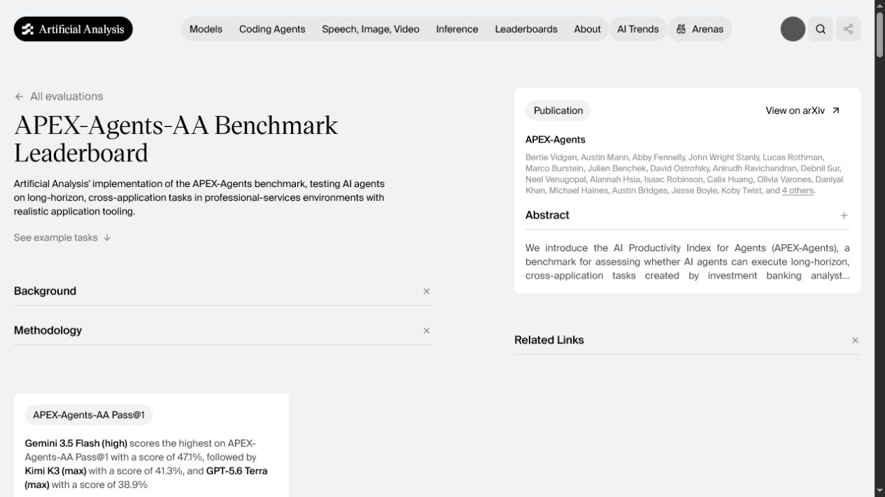
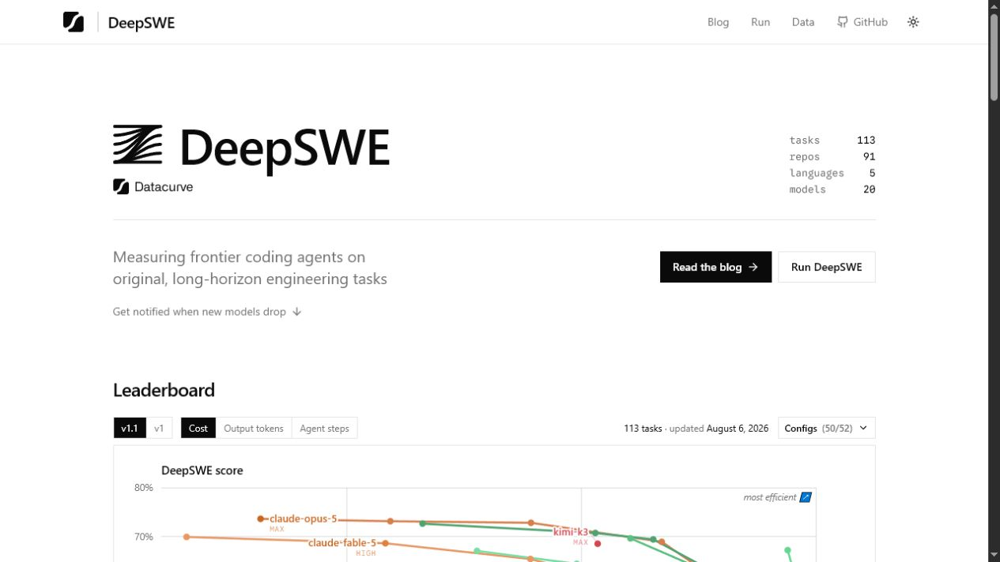
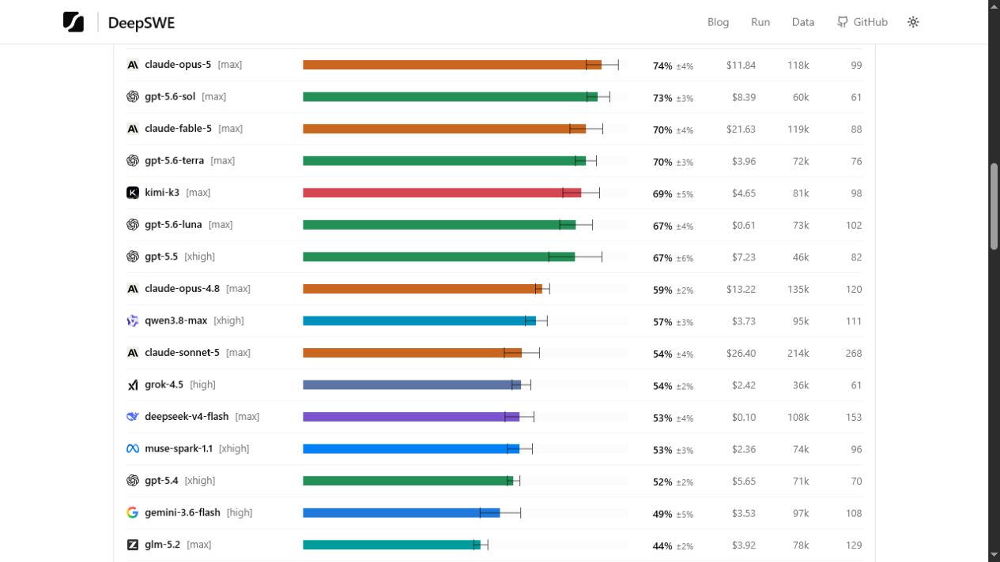
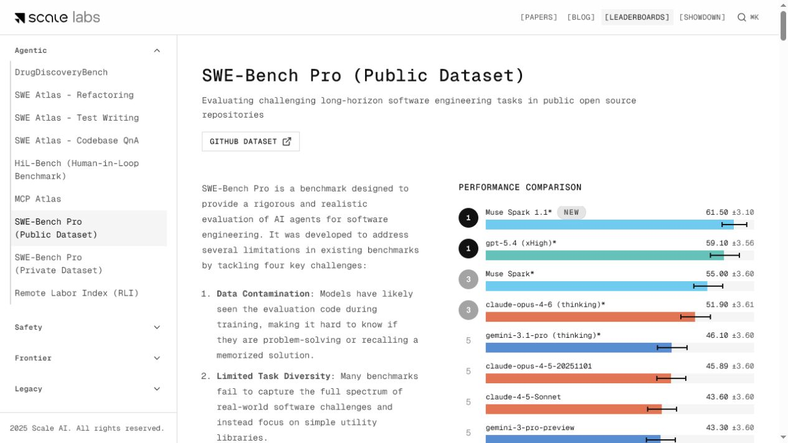
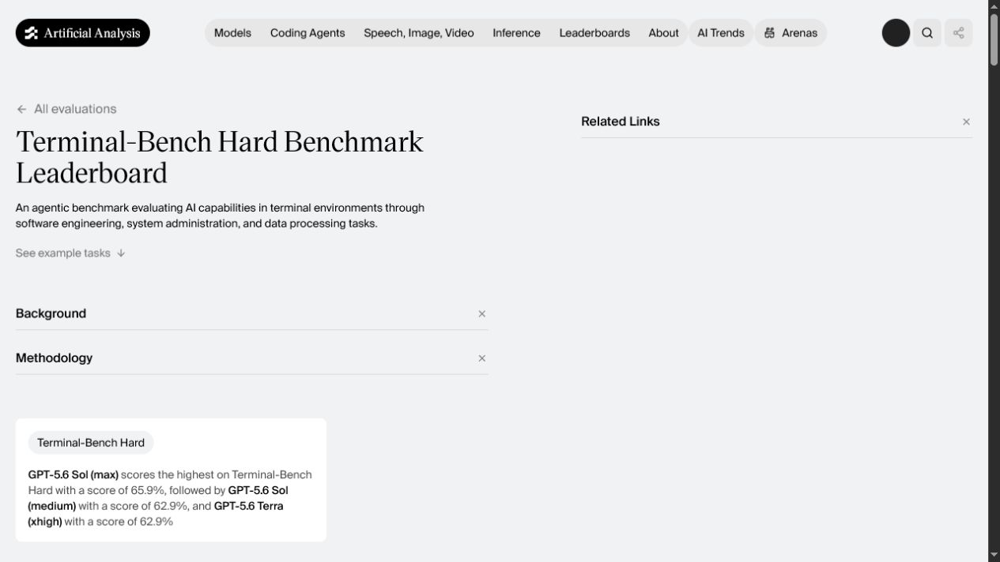
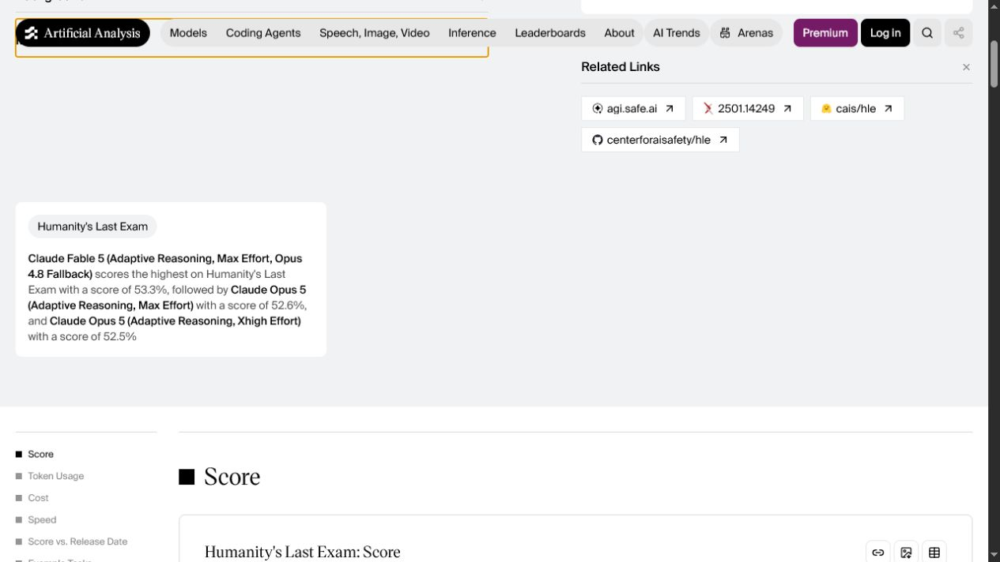
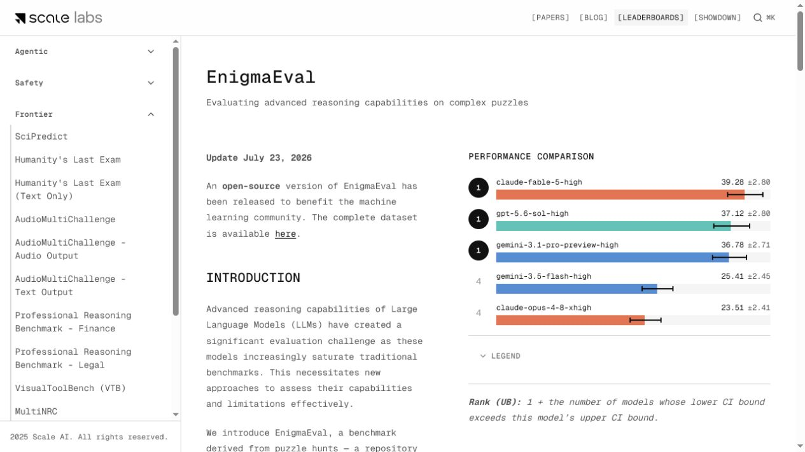
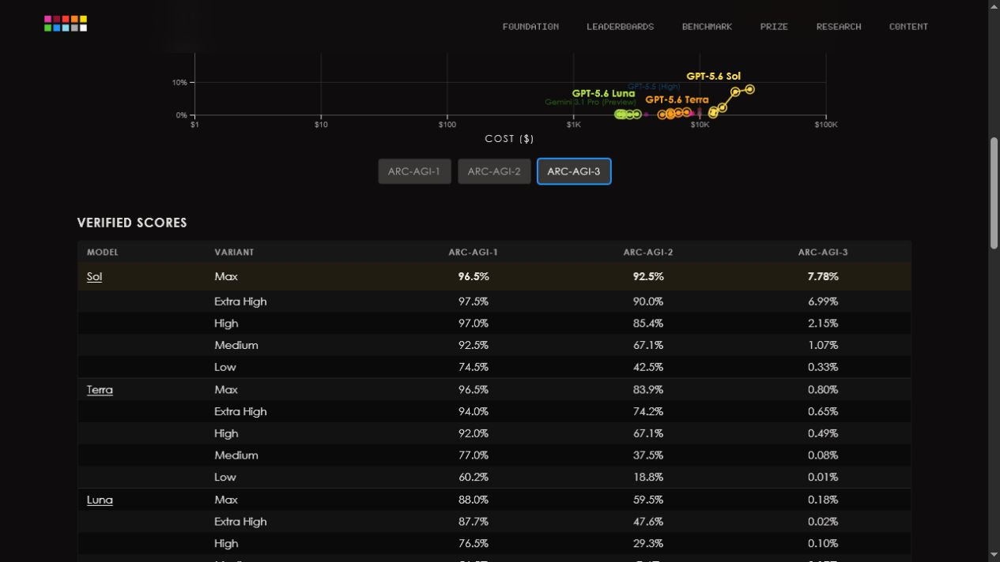
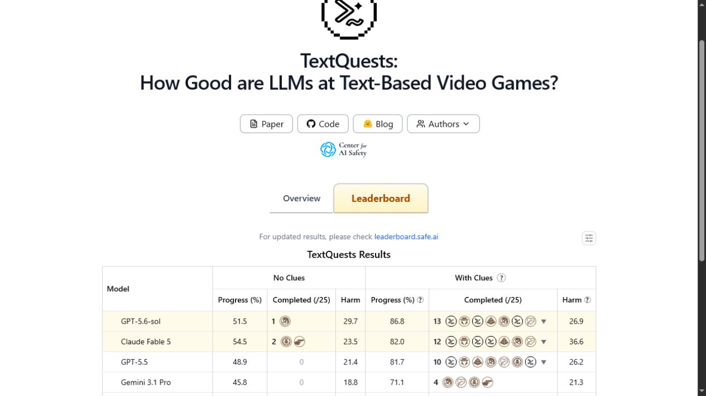

Frontier coverage refresh across eight tracked benchmarks
The mandatory top-row diff covered all 19 production benchmarks and the complete 134-model inventory. The reviewed batch adds four configuration/version-specific model records and 21 scores. No benchmark record is created, no existing score is silently overwritten, and no incompatible protocol is merged.
Accepted changes and stored conversions
Percentages on 0–1000 benchmarks are multiplied by ten. ARC-AGI-2 and HLE values follow their existing scales. DeepSWE uses the whole percentages visibly published in the v1.1 table, not hidden JSON precision.
| Benchmark | Models | Visible values | Stored values | Protocol |
|---|---|---|---|---|
| APEX-Agents-AA | Kimi K3 (max); GPT-5.6 Terra | 41.3%; 38.9% | 413; 389 | AA Pass@1, Stirrup harness; max effort shown |
| DeepSWE v1.1 | Claude Opus 5 (Max); GPT-5.6 Sol/Terra/Luna; Claude Sonnet 5 (Max); DeepSeek V4 Flash (Max); Muse Spark 1.1 | 74%; 73%; 70%; 67%; 54%; 53%; 53% | 740; 730; 700; 670; 540; 530; 530 | 113 tasks, mini-swe-agent; displayed effort per row |
| SWE-Bench Pro | Muse Spark 1.1 | 61.50% | 615 | Public dataset, mini-swe-agent, uncapped cost, 250-turn limit |
| Terminal-Bench Hard | GPT-5.6 Sol; GPT-5.6 Terra | 65.9%; 62.9% | 659; 629 | AA Hard subset; Sol max, Terra xhigh |
| Humanity's Last Exam | Claude Opus 5 adaptive max; adaptive xhigh | 52.6%; 52.5% | 526; 525 | AA text-only HLE, adaptive reasoning at stated effort |
| EnigmaEval | Claude Fable 5 high; GPT-5.6 Sol high; Gemini 3.1 Pro high; Gemini 3.5 Flash high; Claude Opus 4.8 xhigh | 39.28%; 37.12%; 36.78%; 25.41%; 23.51% | 392.8; 371.2; 367.8; 254.1; 235.1 | Pass@1, 95% CI, open-source July 2026 dataset |
| ARC-AGI-2 | GPT-5.6 Sol | 92.5% | 925 | ARC Prize verified, Max reasoning |
| TextQuests | GPT-5.6 Sol | 51.5% | 515 | No Clues progress; With Clues is not mixed |
Visible evidence









Mandatory 19-benchmark top-row sweep
| Tracked benchmark | Official/current source outcome | Decision |
|---|---|---|
| ARC-AGI-3 | Competition and verified GPT-5.6 page checked; current production ARC-AGI-3 rows already cover the visible frontier configs. | No ARC-AGI-3 write. |
| APEX-Agents-AA | Kimi K3 max 41.3 and GPT-5.6 Terra max 38.9 were absent. | 2 inserts. |
| Humanity's Last Exam | Fable adaptive max/fallback already present; Opus 5 adaptive max/xhigh absent. | 2 inserts, 2 model configs. |
| SciCode | Fable adaptive max/fallback, Gemini 3.1 Pro and Kimi K3 top rows already covered. | No write. |
| Terminal-Bench Hard | Sol max and Terra xhigh absent; Sol medium is a second incompatible config for the same benchmark. | 2 inserts; medium deferred. |
| SWE-Bench Pro | Muse Spark 1.1 at 61.50% is a new versioned top row. | 1 model + 1 insert. |
| DeepSWE | v1.1 updated 6 August; seven compatible absent rows accepted. | 7 inserts; conflicting/uncorroborated rows deferred. |
| SpatialViz | Paper v7 checked; no fresh compatible official leaderboard rows. | No write. |
| ARC-AGI-2 | Verified GPT-5.6 Sol max 92.5% absent. | 1 insert. |
| EnigmaEval | July open-source leaderboard top five absent under matching configurations. | 5 inserts. |
| TextQuests | No Clues top table exposes GPT-5.6 Sol 51.5%; Fable identity is ambiguous. | 1 insert; Fable deferred. |
| IntPhys 2 | Official Meta publication remains a static benchmark result set. | No write. |
| ERQA | Official repository/harness checked; no fresh scored frontier table. | No write. |
| MMMU-Pro | Official page remains dated 5 September 2025; current no-tools production rows are newer and already covered. | No write. |
| SWE-bench Verified | Official bash-only page and release protocol checked; no compatible fresh visible row beyond current production inventory. | No write. |
| MindCube | Paper source checked; no fresh compatible official leaderboard rows. | No write. |
| AA Long Context Reasoning | Header says GPT-5.2 Codex xhigh 75.7%; FAQ says Kimi K3 74.7% is highest. | Deferred for source contradiction. |
| Tau2-Bench Telecom | Current top rows JT-35B-Flash and GLM-5.2 max at 99.1% are already present. | No write. |
| SkateBench | v2 top rows and protocol checked; production already matches. | No write. |
Deferred and deliberately not written
- DeepSWE Kimi K3 and Grok 4.5: newer source values would create a second curated source and change the effective score by averaging old and new evidence. A source-retirement migration is required first.
- Qwen 3.8 Max xhigh and Gemini 3.6 Flash high: visible on DeepSWE, but no reliable first-party release/model-card source was found in the provider sweep.
- Terminal-Bench 2.1: distinct from Terminal-Bench Hard and not merged. A separate benchmark remains a candidate, but the current 89% frontier is already close to saturation and configuration identity needs a dedicated review.
- TextQuests Claude Fable 5: the page omits the adaptive/effort identity used by existing production models. GPT-5.5's newer official-page score uses a different source identity from its existing curated row and is not duplicated.
- AA-LCR: contradictory top-model summaries on the same source page.
- AA-Briefcase, GDPval-AA v2, AutomationBench-AA, LAB-AA and EnterpriseOps-Gym-AA: promising discovery leads, but public reproducibility/adoption evidence is not yet sufficient for a new tracked benchmark.
Provider release sweep
OpenAI, Anthropic, Google/DeepMind, SpaceXAI, Moonshot, DeepSeek, Qwen/Alibaba and major open-weight discovery paths were checked independently. No new provider release after the already tracked GPT-5.6, Claude 5, Grok 4.5 and Kimi K3 launches was accepted. Qwen 3.8 Max and Gemini 3.6 Flash remain leaderboard-only discovery leads.
Primary references included OpenAI GPT-5.6, Anthropic newsroom, Grok 4.5, DeepSeek changelog, and Kimi K3.
Controls and publish checks
- Pre-write production inventory: 134 models, 19 benchmarks, Convex 521, D1 521, drift 0.
- Screenshot control on
https://example.com/succeeded before research. - Local validation passed (4 models, 0 benchmarks, 21 scores, 9 evidence files, 27 sources); 108 tests passed; the first dry-run planned 4 model creates and 21 score inserts with no refreshes or replacements; apply matched that plan; Convex and D1 are aligned at 542/542 with drift 0; the post-apply dry-run reports all 21 scores unchanged; credential scan passed. Commit, push, and live checks are pending.
Next-run learnings
- Run the static screenshot control first.
- DeepSWE can change on the run date; re-check its visible update timestamp.
- Never add a second source merely to simulate replacement.
- Keep TextQuests No Clues separate from With Clues.
- Do not merge Terminal-Bench 2.1 with Terminal-Bench Hard.
- Require first-party release identity for Qwen 3.8 Max and Gemini 3.6 Flash.
- Re-check AA-LCR's contradictory summaries before any write.